💰 Comercialización
Venta Masiva de Animales y Albarán de Leche — Guía completa paso a paso
MANUAL PRÁCTICO · Todos los flujos de comercialización
Venta Masiva de Animales y Albarán de Leche — Guía completa paso a paso
Este manual documenta los flujos de comercialización disponibles en Livestock Manager: la venta masiva de animales (producción cárnica) con todos los pasos del wizard y la expedición de leche de tanque (albarán de leche) con su wizard de 6 pasos.
El acceso se realiza desde Registros → Comercialización en la barra inferior. La vista principal ofrece dos pestañas: 🥩 Carne y 🥛 Leche.
La sección de Comercialización agrupa todas las operaciones de venta de la explotación: venta de animales para carne, expedición de leche, y gestión de compradores y transportistas.

Desde esta pantalla puedes:
La vista se organiza en dos pestañas:
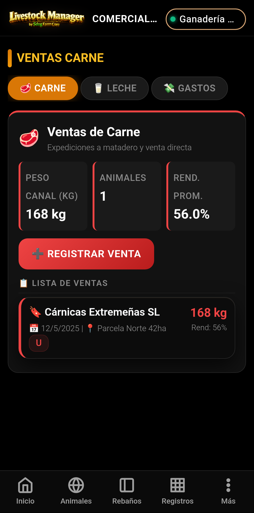
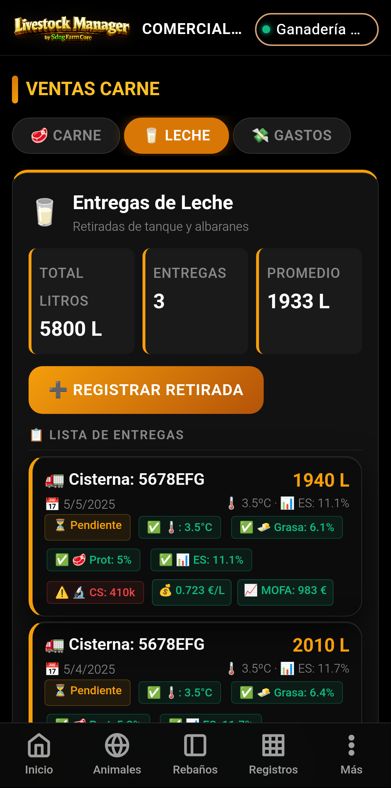
El wizard de Venta Masiva guía al ganadero a través de todo el proceso de comercialización de animales para carne, desde la selección de los animales hasta la generación de la documentación oficial (albarán DIMOE y factura).
Al pulsar el botón "Venta Masiva" en la pantalla de Comercialización, se abre el wizard en una ventana a pantalla completa.
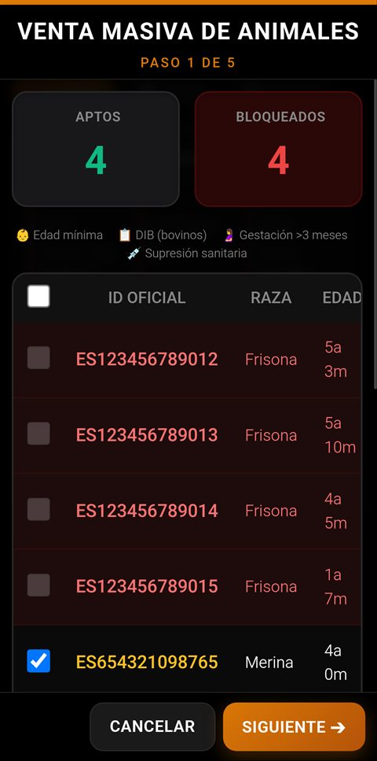
En este primer paso puedes:
Una vez seleccionados los animales, pulsa SIGUIENTE para continuar.
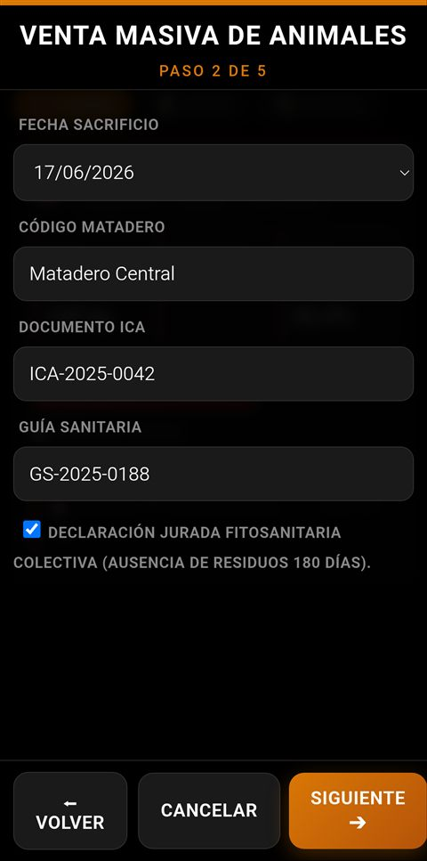
En este paso se registra la información de trazabilidad obligatoria:
| Campo | Descripción |
|---|---|
| Fecha de venta | Fecha de la operación. Por defecto la fecha actual. |
| Matadero | Selecciona el matadero de destino de la lista (dados de alta en Ajustes → Compradores) |
| Nº ICA Matadero | Código ICA del matadero de destino |
| Nº Guía | Número de guía de origen o documento de transporte |
| Motivo de venta | Selecciona el motivo (sacrificio, venta en vivo, etc.) |
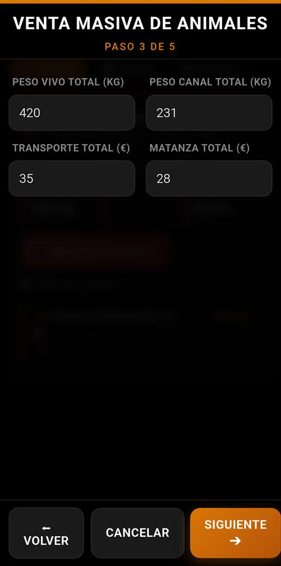
Para cada animal seleccionado, se muestran los siguientes campos:
| Campo | Descripción |
|---|---|
| Peso vivo (kg) | Peso del animal en vivo. Se puede rellenar manualmente o traer del último pesaje. |
| Peso canal (kg) | Peso estimado o real de la canal. Se calcula aplicando el rendimiento si está configurado. |
| Gastos de transporte (€) | Coste del transporte al matadero. Se prorratea entre los animales si es un viaje compartido. |
| Gastos de matadero (€) | Coste del sacrificio y faenado por animal. |
| Rendimiento (%) | Rendimiento canal estimado (típicamente 45-55% en ovino). |
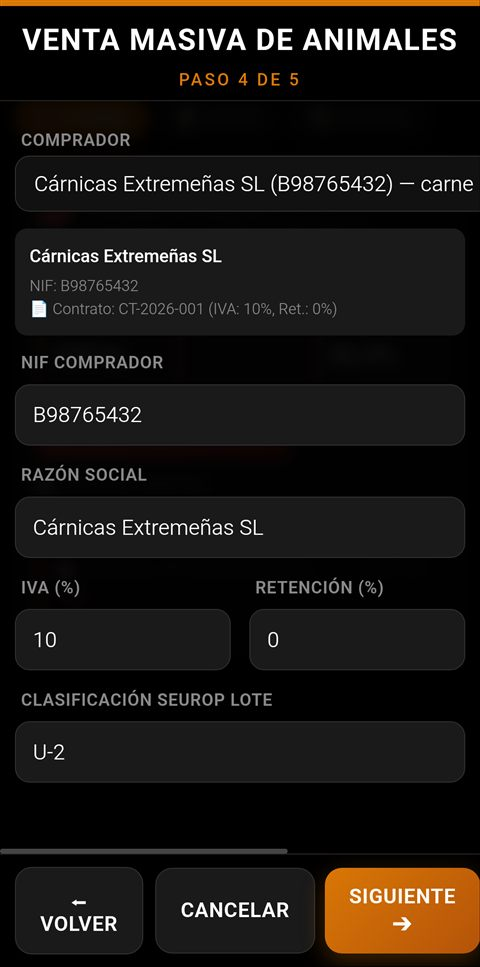
En este paso se configura la información comercial:
Para cada canal, se puede registrar la clasificación SEUROP:
| Clase | Descripción | Conformación |
|---|---|---|
| S | Superior | Perfiles extraordinarios |
| E | Excelente | Perfiles muy convexos |
| U | Muy buena | Perfiles convexos |
| R | Buena | Perfiles ligeramente convexos |
| O | Mediana | Perfiles rectilíneos |
| P | Inferior | Perfiles cóncavos |
También se puede registrar el grado de engrasamiento (1 a 5) y el color de la canal.
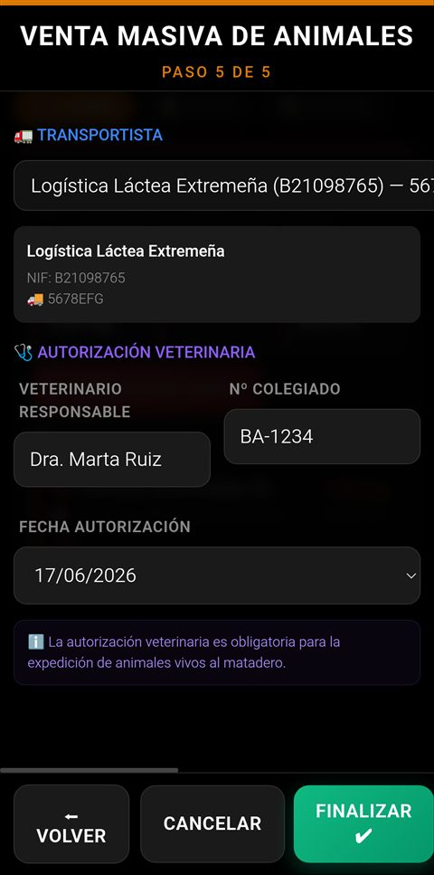
Último paso del wizard, donde se registra la información logística y sanitaria:
| Campo | Descripción |
|---|---|
| Transportista | Nombre o empresa de transporte |
| Nº de autorización de transporte | Número de autorización del transportista (obligatorio) |
| Matrícula del vehículo | Matrícula del camión o vehículo de transporte |
| Campo | Descripción |
|---|---|
| Veterinario autorizante | Nombre del veterinario que autoriza el traslado |
| Nº Colegiado | Número de colegiado del veterinario |
| Fecha de autorización | Fecha del certificado veterinario |
| Observaciones | Notas adicionales (condiciones especiales, etc.) |
El wizard de Albarán de Leche registra la expedición de leche de tanque, incluyendo todos los parámetros obligatorios: datos de recogida, cadena de frío, analíticas de laboratorio, precio y liquidación, y el resumen MOFA para la declaración mensual.
Se accede desde la pestaña Leche de Comercialización pulsando el botón "Albarán de Leche" o desde el asistente de producción láctea seleccionando "Expedición de Tanque".
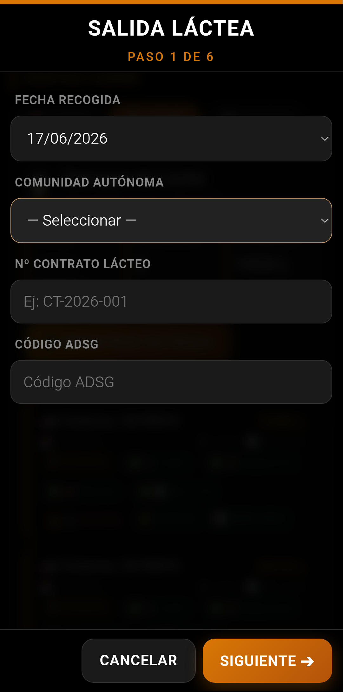
En este primer paso se recoge la información administrativa de la expedición:
| Campo | Descripción |
|---|---|
| Fecha de recogida | Fecha de la expedición de leche |
| CCAA de recogida | Comunidad Autónoma donde se realiza la recogida |
| Contrato lácteo asociado | Nº de contrato con la industria/compañía |
| ADSG | Agrupación de Defensa Sanitaria Ganadera (si aplica) |
| Nº de explotación (REGA) | Código REGA de la explotación (se rellena automáticamente desde la ficha de finca) |
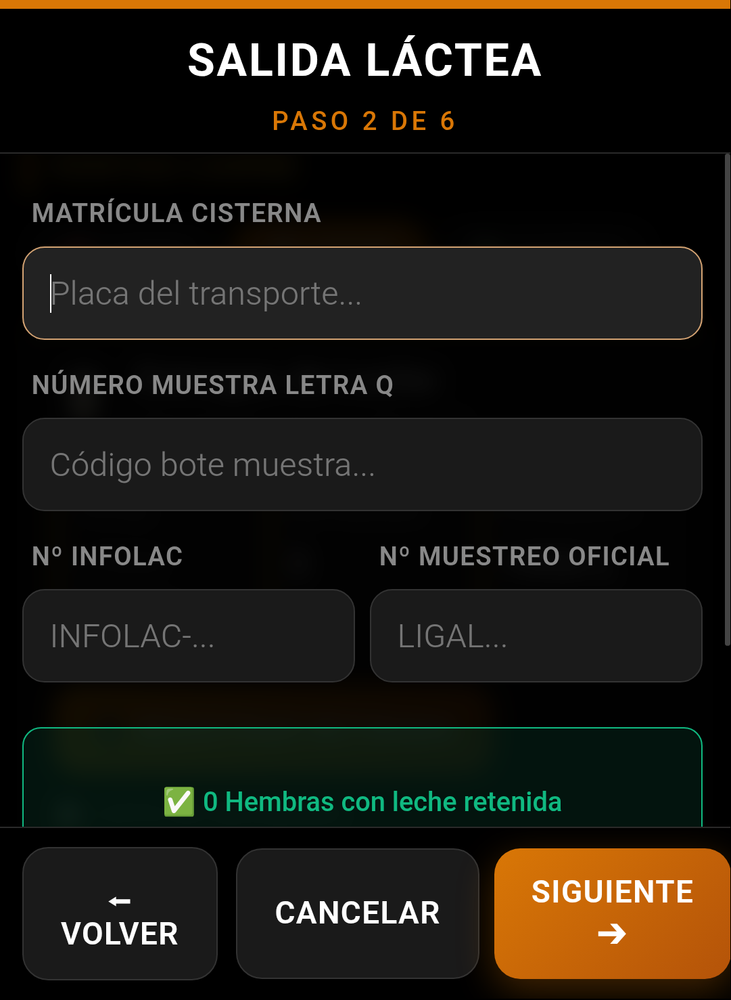
En este paso se registra la información logística de la recogida:
| Campo | Descripción |
|---|---|
| Transportista / Cisterna | Empresa de recogida y matrícula de la cisterna |
| Nº de precinto | Número de precinto del tanque (opcional pero recomendado) |
| Letra Q | Letra Q de clasificación de la leche (Q=calidad, NoQ=no calidad) |
| INFOLAC | Nº de registro INFOLAC si aplica |
| Volumen recogido (L) | Litros de leche recogidos en esta expedición |
| Control de antibióticos | ¿Se ha realizado test de inhibidores? (Sí/No) |
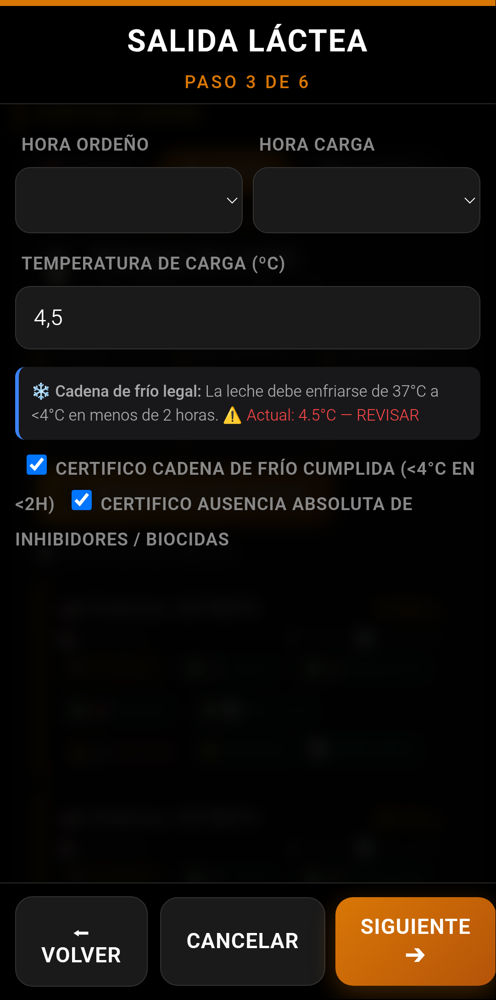
Control de la temperatura de la leche en el momento de la recogida:
| Campo | Descripción | Rango recomendado |
|---|---|---|
| Temperatura del tanque (°C) | Temperatura de la leche en el tanque de almacenamiento | 2–6 °C |
| Temperatura ambiente (°C) | Temperatura exterior en el momento de la recogida | - |
| Temperatura a la llegada (°C) | Temperatura de la leche al llegar a la industria | < 8 °C |
| Horas desde el último ordeño | Tiempo transcurrido desde el último ordeño hasta la recogida | < 24h |
| Test de inhibidores | Resultado del test de detección de antibióticos | Negativo |
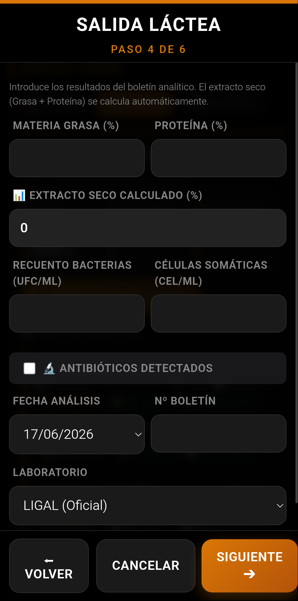
Registro de los resultados del análisis de laboratorio de la leche:
| Parámetro | Unidad | Rango de calidad |
|---|---|---|
| Grasa | % | ≥ 3,5% |
| Proteína | % | ≥ 3,0% |
| Extracto seco | % | ≥ 12,0% |
| Recuento de bacterias | UFC/ml | < 100.000 |
| Células somáticas | Cél./ml | < 400.000 |
| Punto crioscópico | °C | ≥ -0,520 °C |
| Urea | mg/L | 150–300 |
| Acidez | °D | 6,0–7,5 |
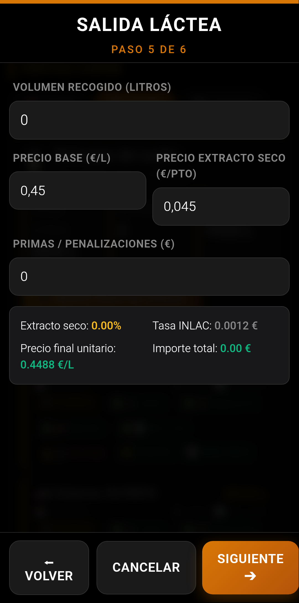
Cálculo detallado del precio de la leche en función de los parámetros de calidad:
| Concepto | Descripción |
|---|---|
| Volumen facturado (L) | Litros totales de la expedición |
| Precio base (€/L) | Precio base establecido en el contrato lácteo |
| Precio grasa (€/L) | Prima o penalización por contenido de grasa sobre el estándar |
| Precio proteína (€/L) | Prima o penalización por contenido de proteína sobre el estándar |
| Precio extracto seco (€/L) | Prima por extracto seco |
| Primas / bonificaciones | Primas por calidad (recuento bajo, células somáticas, etc.) |
| Penalizaciones | Descuentos por incumplimiento de parámetros |
| Precio final (€/L) | Precio total después de primas y penalizaciones |
| Importe total (€) | Volumen × Precio final |
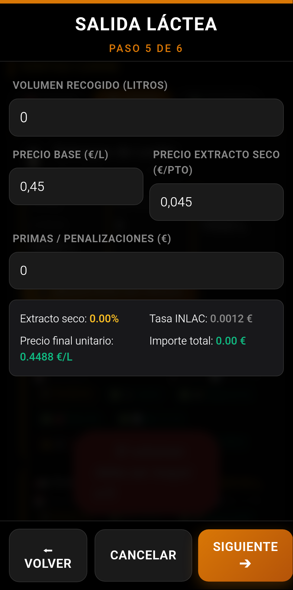
Último paso del wizard, donde se genera el resumen para la MOFA (Mensual de Operadores y Facturación Anual):
Antes de finalizar, se muestra un resumen completo de todos los datos introducidos:
Pulsa FINALIZAR para guardar el albarán y generar la documentación.